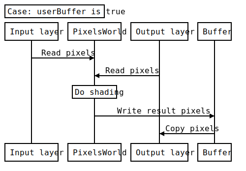
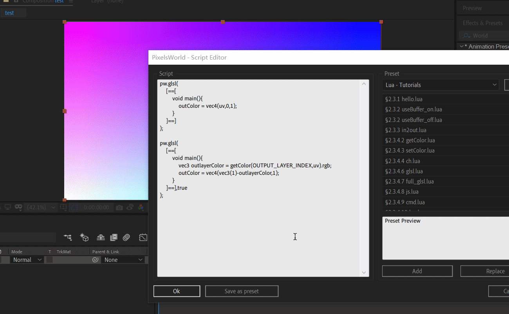

在lua中运行GLSL
用法
pw.glsl(GLSLcode[, useBuffer])
- GLSLcode: 字符串，源分段代码。 如果您输入的代码可以在 GLSL渲染模式下运行， 则可在此处直接使用 (此处不支持来自shadertoy.com的代码)
- useBuffer : 布尔值，可选参数。默认为false。 如果为true，PixelsWorld会生成临时内存来储存渲染结果。GLSL渲染完毕后，临时储存器中的数据会覆盖输出层的像素数据。
如果每帧仅调用一次pw.glsl函数，则
useBuffer可以忽略
简而言之useBuffer将在第二次调用pw.glsl的时候，允许您使用上一个glsl的渲染结果。 如果想使用上一个shader的渲染结果，请使用getColor(OUTPUT_LAYER_INDEX,uv)。
关闭useBuffer的渲染模式：

开启useBuffer的渲染模式：

以下代码可以帮助了解 useBuffer：
注意：
- 您可以使用
[==[和]==]符号包裹住多行代码。
useBuffer_on.lua
pw.glsl(
[==[
void main(){
outColor = vec4(uv,0,1);
}
]==]
);
pw.glsl(
[==[
void main(){
vec3 outlayerColor = getColor(OUTPUT_LAYER_INDEX,uv).rgb;
outColor = vec4(vec3(1)-outlayerColor,1);
}
]==],true
);
useBuffer_off.lua
pw.glsl(
[==[
void main(){
outColor = vec4(uv,0,1);
}
]==]
);
pw.glsl(
[==[
void main(){
vec3 outlayerColor = getColor(OUTPUT_LAYER_INDEX,uv).rgb;
outColor = vec4(vec3(1)-outlayerColor,1);
}
]==],false
);

高效化
使用上面的方法效率会非常低。
因为我们每执行一次代码，像素世界都会把结果返回给Ae一次！然后第二个shader还需要把结果再从Ae读回去！这很低效。
除非你想在两个shader之间想用Lua读取输出像素做点计算——而大部分时间我们没这个需求。我们想让GPU算完所有的特效再返回结果给Ae。
这时候你需要用下面的方式渲染：
pw.beginShaders()
pw.glsl(第一个glsl代码)
pw.glsl(第二个glsl代码)
...
pw.glsl(第N个glsl代码)
pw.endShaders()
我们在首尾分别加上pw.beginShaders()和pw.endShaders()，这样像素世界会在endShaders给Ae汇报渲染结果，省去了中间每一步都返回一张图像的时间。
这会非常高效！它的原理跟我们玩游戏是一样的，像素世界会在beginShaders和endShaders之间建立游戏循环，使用纯GPU的形式，不断交换两张贴图进行计算。
小技巧：最后的
pw.endShaders可以省略。如果你用了pw.beginShaders但是没有用pw.endShaders，像素世界会自动为你在最后一行加上。
pw.shadertoy和pw.full_glsl也同样支持高效化运算，你也可以混合使用这些渲染函数。比如：
pw.beginShaders()
pw.glsl(glsl代码)
pw.glsl(glsl代码)
pw.shadertoy(shadertoy代码)
pw.glsl(glsl代码)
pw.full_glsl(full_glsl代码)
pw.endShaders()
注意，所有在
beginShaders和endShaders之间的渲染函数都强制支持上一渲染器的输出结果（并且完全不耗费时间成本）。
图示：